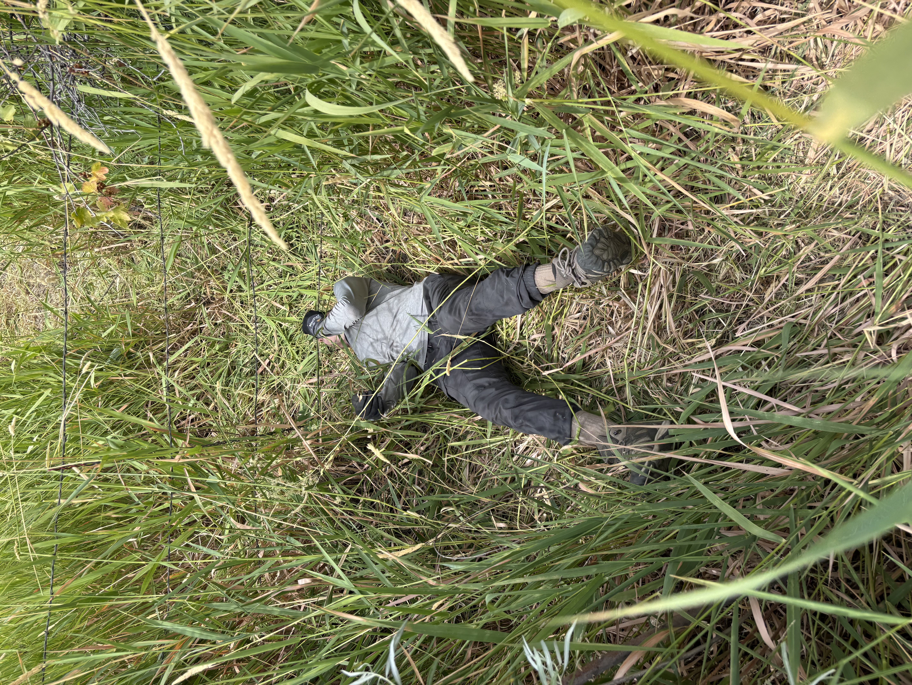
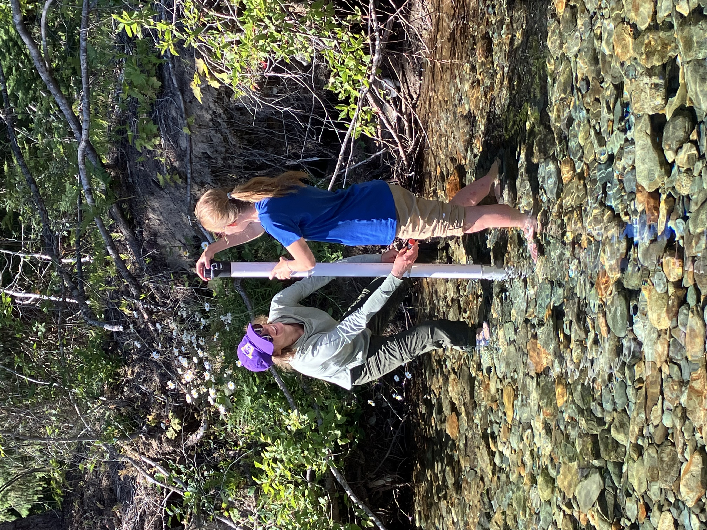
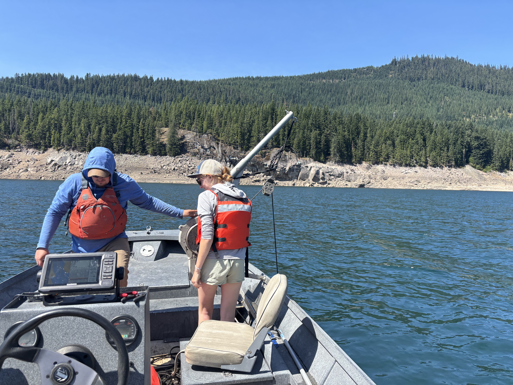

|
 |
Clear Creek Dam Trap-and-HaulIn July, staff successfully captured 35 Bull Trout at Clear Creek Dam, 12 of which originated from the North Fork Tieton River. We did not collect any recaptures. Our efforts will intermittently continue at Clear Creek Dam in the upcoming months, with the goal of transporting North Fork Tieton River fish back into Clear Lake and tagging additional individuals. Tagging enables staff to monitor migration timing, calculate critical metrics such as survival rates, and evaluate the effectiveness of the trap-and-haul program. With the construction of Clear Creek Dam fish passage paused, this work is critical. In September, our efforts will shift to the upper Yakima River (Keechelus and Kachess dams). |
 |
Interns Maintain Toppenish PIT SitesOur two interns, Emma Meyer and Lauren Knitter, completed several important tasks around Toppenish National Wildlife Refuge. Multiple PIT tag monitoring sites on Toppenish Creek track Steelhead and can become overgrown, which contributes to tuning and access difficulties. Emma and Lauren cleared excess vegetation and conducted necessary maintenance at each site. These efforts help ensure continuous and accurate data collection that inform management in Toppenish Creek. |
 |
Water Level Loggers Deployed in Gold CreekEmma and Lauren also worked with Katy Pfannenstein, a habitat biologist from our Leavenworth office, to deploy water level loggers throughout the proposed Gold Creek restoration area. Gold Creek, the sole spawning tributary to Keechelus Reservoir, faces dewatering issues similar to other Bull Trout spawning tributaries in the region. These dewatering events disrupt and delay Bull Trout spawning activities, threatening the reproductive success and overall health of local Bull Trout populations. Currently the proposed restoration includes instream habitat enhancements and filling Gold Creek Pond, an abandoned quarry site that currently diverts groundwater from Gold Creek, exacerbating migration barriers. Data collected by the water level loggers will inform future restoration actions and measure their success over time. |
 |
Keechelus Reservoir Acoustic MonitoringStaff successfully downloaded data from and maintained the acoustic monitoring array in Keechelus Reservoir. The array continuously tracks the depth, temperature, and locations of tagged Bull Trout within the reservoir. The resulting data also allows estimation of survival and entrainment rates of La Salle reared Bull Trout and Bull Trout transported through the trap and haul program. These data will be used to pinpoint the timing and conditions of entrainment at Keechelus Dam, and adjust trap-and-haul timing and monitoring in the Yakima Basin. |